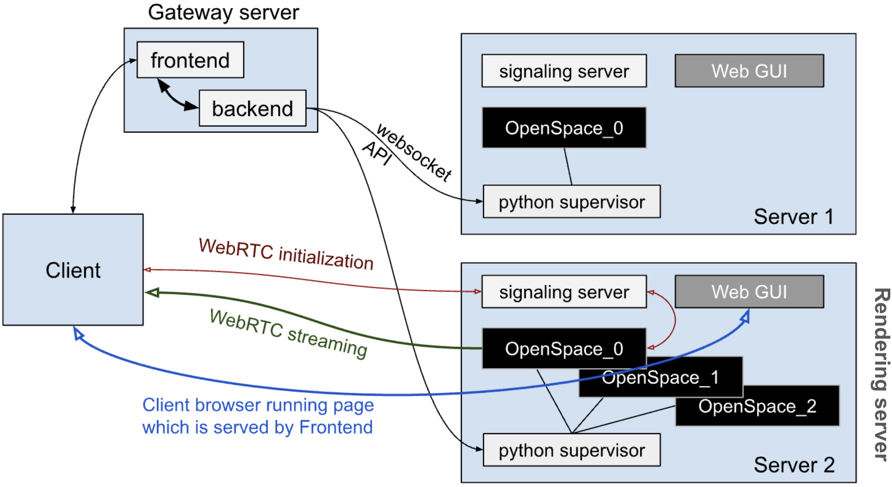
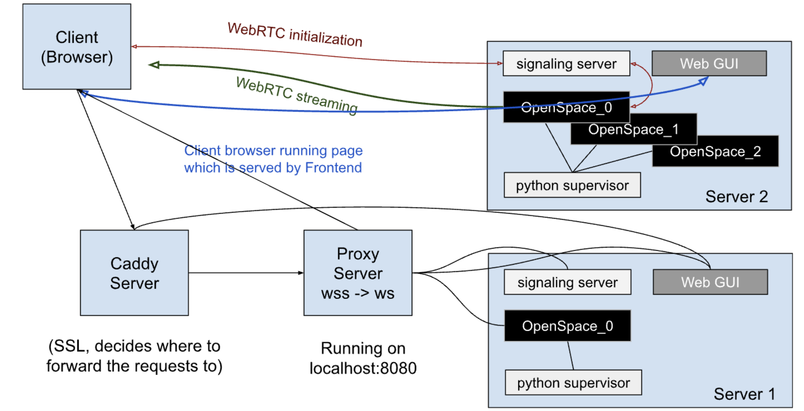

System Architecture
This document describes the architecture of OpenSpace WebRTC, including the main components, API commands, session flow, and network endpoints.
Components
OpenSpace WebRTC consists of four main components:
| Component | Role |
|---|---|
| Rendering Server | Runs OpenSpace instances, streams video over WebRTC, accepts API commands |
| Streaming Backend Server (SB Server) | Orchestrates OpenSpace instances, sends commands to rendering servers |
| Streaming Frontend Server (SF Server) | Serves Web GUI to clients, handles session requests |
| Client Browser | Displays streamed OpenSpace session, sends user interactions to rendering server |

API Overview
Communication between the SB Server and rendering servers uses JSON messages. All responses include an error field. If the error is not none, then its value should be read and the error condition handled before interpreting the rest of the message.
| Message | Description | Response from rendering server |
|---|---|---|
{ "command": "START" } |
Start an OpenSpace rendering streaming session. | { "command": "START", "error": "none", "id": id }Returns an id integer for the session. A value of -1 signifies an unsuccessful start. The id value starts at zero. If "error" is "none" then the session started successfully. This may also return "no available slots". |
{ "command": "STOP", "id": id } |
Stop the OpenSpace rendering streaming session specified by the integer session id. | { "command": "STOP", "error": "none", "id": id }Returns the id number of the session to be stopped. A value of -1 signifies an unsuccessful stop. If "error" is "none" then the session was stopped successfully. This may also return "not running". |
{ "command": "RESOLUTION", "id": id, "width": width_pixels, "height": height_pixels } |
Set the resolution of the instance id to render in resolution of width x height (in pixel integers). This also works while OpenSpace is running. | { "command": "RESOLUTION", "error": "none", "id": id, "width": width_pixels, "height": height_pixels } |
{ "command": "STATUS", "id": id } |
Request for status of the OpenSpace rendering session specified by the integer id. | { "command": "STATUS", "error": "none", "id": 0, "status": status }Where status is one of: "IDLE", "INITIALIZING", "RUNNING", "DEINITIALIZING", "INVALID".If "error" is "none" then the returned status can be considered valid. This may also return "invalid id". |
{ "command": "SERVER_STATUS" } |
Requests general status of the rendering server | Example return message:{ "command": "SERVER_STATUS", "error": "none", "id": 0, "running": 1, "total": 3 }In this example, there is currently 1 running instance, out of a possible 3 instances that the server can simultaneously support. |
Session Initialization Sequence
Starting a Rendering Server: A rendering server is intended to run continuously in order to provide access whenever requested. To start a server for the first time, run the python supervisor. This will do the following: - Start a signaling server which will handle all sessions between any of the running OpenSpace instances on its own server and their corresponding client. - Start a WebGUI frontend served by node.js. Any of the clients connecting to OpenSpace instances will connect to this at port 4690 in order to obtain their copy of the WebGUI to run on their browser. - Establish a websocket connection on port 8765 to listen for commands from the Streaming Backend Server (SB Server). The supervisor does not initiate any communications; it only responds to commands from the SB Server.
The table below describes the typical sequence of events when a user starts an OpenSpace WebRTC session. It shows the interactions between the client browser, streaming frontend server (SF Server), streaming backend server (SB Server), and rendering server.
| Client Browser | Streaming Frontend Server (SF Server) | Streaming Backend Server (SB Server) | Rendering Server |
|---|---|---|---|
| User browses to the streaming frontend web page and requests a session | |||
| Displays initial page | |||
| Receives session request from SF Server | |||
Sends SERVER_STATUS command to each server |
Each rendering server responds with the number of busy sessions | available sessions | ||
| Selects a rendering server for this session | |||
Sends START command to the supervisor |
|||
Receives START command |
|||
| Starts instance of OpenSpace with the lowest-available ID (0 in this example) | Responds -1 if no slot available | |||
| OpenSpace registers itself with the signaling server using ID 0 | |||
| Sends 0 response to SB Server | |||
| Receives 0 from supervisor | |||
Begins polling every 5 seconds with STATUS 0 command |
Responds with INITIALIZING until complete | then RUNNING |
||
| Sends "start" message to SF Server | |||
| Shows a "waiting for initialization" page | |||
| OpenSpace instance completes initialization | |||
STATUS 0 polling receives RUNNING status |
|||
| Sends "running" message to SF Server | including session URL | |||
Receives “running” message with session URL:openspaceweb.sci.utah.edu:4690/frontend/#/streaming?id=0 Where the URL parameter id contains the OpenSpace session ID |
|||
| Switches from "waiting" message to browser frame using new URL | |||
| Browser gets the Web GUI from rendering server using the new URL | |||
| Establishes an API websocket connection with OpenSpace 0 (port = 4682 + ID) | |||
| User clicks "Join session" (automatic in future versions) | |||
| Establishes a WebRTC connection with rendering server | |||
| Web GUI instance registers itself with signaling server | |||
| Web GUI instance requests a streaming session with OpenSpace 0 | |||
| Signaling server tells OpenSpace 0 to start streaming | |||
| OpenSpace 0 starts sending video frames over WebRTC to client | |||
| Continuously receives the stream of video frames |
Continuous Operation
Once the session is running:
- User interactions (menu, camera control) are sent via the API websocket to the rendering server.
- OpenSpace continuously streams video frames over WebRTC.
- SB Server manages session lifecycle, including session timeouts and manual termination.
Security and Network Endpoints
Security Note
Storing server IP addresses, port numbers, and instance IDs in the client browser’s localStorage poses a security risk. Future improvements will secure session information and API endpoints.
Ports
| Component | Default Port | Description |
|---|---|---|
| Web GUI | 4690 | Client interface served by node.js |
| OpenSpace instances | 4682, 4683, 4684… | API websocket per instance |
| Signaling server | 8443 | Handles WebRTC signaling |
| Proxy server | 8080 | Reverse proxy for secure connections |
| Supervisor | 4699 | Manages processes, Web GUI, and signaling server |
Secure Endpoints
| Client URL / WebSocket | Local Mapping | Notes |
|---|---|---|
https://openspaceweb.com/frontend/#/streaming?id=0 |
http://localhost:4690/frontend/#/streaming?id=0 |
Web GUI |
wss://openspaceweb.com/ws |
localhost:8080/ws → ws://openspaceweb.com/ws |
Session signaling |
wss://openspaceweb.com/4682 |
localhost:8080/4682 → ws://openspaceweb.com:4682 |
OpenSpace instance API websocket |
wss://openspaceweb.com/8443 |
localhost:8080/8443 → ws://openspaceweb.com:8443 |
Signaling server |

Unsecure Endpoints
| Client URL / WebSocket | Notes |
|---|---|
http://52.54.32.162:4690/frontend/#/streaming?id=0 |
Web GUI |
ws://openspaceweb.com/ws |
Session signaling |
ws://openspaceweb.com/4682 |
OpenSpace instance API websocket |
ws://openspaceweb.com:8443 |
Signaling server |
Note: Storing server IP addresses, port numbers, and instance IDs in the client browser’s localStorage poses a security risk. This should be mitigated in future security improvements.